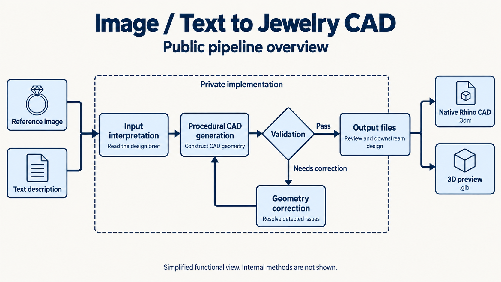

Technical article / Jewelry & computational design
Image or text.
Native jewelry CAD.
A production-ready workflow for supported ring designs,
with CAD review before manufacture.

Turning a jewelry image or a written brief into editable CAD is a geometry problem. The result must describe a three-dimensional object that can be inspected, modified, and passed into an established design process.
Our image-to-CAD and text-to-CAD workflow addresses that conversion for supported ring designs. It generates native Rhino .3dm output alongside a .glb preview. The workflow is production-ready within this supported scope, with CAD review required before manufacture.
01 / The problem
The gap between a reference
and usable CAD geometry.
A product image describes appearance from a particular viewpoint. It does not fully specify the back of a setting, hidden connections, absolute scale, or the dimensions required to fit a stone. A text brief can state a design intention while leaving those same details unresolved.
When the input is visual and the deliverable is CAD, someone must resolve those ambiguities and construct the geometry. That translation is a substantial part of the work. Automation has to preserve the visible design relationships while producing geometry that can be reviewed in three dimensions.
The problem becomes especially demanding in rings: band proportions, stone placement, repeated details, and the connections between components interact within a small object. Errors can remain hidden in an attractive preview and become apparent only during CAD inspection.
02 / The pipeline
Two input routes.
A CAD deliverable.
The workflow accepts a reference image or a text description. At a public, functional level, the task is to interpret the design brief, generate CAD geometry, evaluate the result, and correct detected issues before delivering output.
The diagram shows these responsibilities and the correction path. It deliberately abstracts the implementation. It does not disclose the internal architecture, generation methods, or decision logic.
This addresses a practical bottleneck: moving a supported design brief into an editable CAD model without requiring every element to be constructed manually from the beginning. The scope is ring design; a supported input still needs enough information to make the intended result assessable.
03 / The output
Native CAD and a visual preview
serve different purposes.
The Rhino deliverable contains NURBS-based CAD geometry for inspection and further editing. The separate 3D preview supports visual review. A successful preview alone does not establish that the CAD geometry meets a downstream production requirement.
| Deliverable | Purpose |
|---|---|
Rhino .3dm | Inspect and edit the ring’s CAD geometry. |
Preview .glb | Review the design interactively in 3D. |
| Reviewed CAD | Prepare the design for the intended downstream process. |
The file extension is only part of the distinction. Rhino files can contain several kinds of geometry, including meshes; the objects inside the file matter. Here, native CAD refers to the generated NURBS-based geometry, rather than using a Rhino file solely as a container for a preview mesh. McNeel’s geometry-library overview provides background on Rhino geometry and file support.
04 / Production scope
Production-ready within
a defined design scope.
The workflow is production-ready for supported ring designs, with CAD review before manufacture. In this context, readiness applies to generating CAD deliverables as part of a design workflow. Manufacturing release remains a separate decision for each piece.
That review must consider the intended size, geometry integrity, component intersections, stone fit, minimum sections, clearances, and the requirements of the chosen manufacturing process. These are acceptance criteria for a finished design, not properties that can be inferred from an image or a file download.
Rhino’s geometry diagnostics help inspect object validity. A valid CAD object still needs design-specific and process-specific review.
05 / Limitations
What the workflow does
and does not resolve.
Incomplete input. A single photograph cannot establish all hidden dimensions. A text description may omit critical relationships. Missing information requires clarification or an explicit design decision.
Supported design range. Production readiness applies to supported ring designs. It is not a claim of reliable reconstruction of every jewelry style, arbitrary topology, or ambiguous reference.
Geometry and manufacturing checks. Automated validation and correction can detect and address issues, but they do not replace a CAD review or approval for a specific material, stone, and fabrication process.
Performance evidence. This article does not publish a measured success rate, a generation-time guarantee, or a comparison benchmark. Those claims require a defined test set and recorded results.
The contribution is a working route from supported image or text inputs to editable jewelry CAD. It reduces the need to begin each supported design with a completely manual reconstruction while retaining review at the point where engineering and manufacturing requirements matter.
06 / Project context
From generated rings
to a CAD workflow.
The team’s ring-generation workflow was developed around six months before this article. The current work extends that capability to native Rhino CAD. It sits alongside automation work for J., Sitara, Kollective Moda, and other garment businesses.
This article documents the capabilities and boundaries of this implementation. It is a technical overview, not a reproduction guide or a claim to have invented procedural jewelry design.